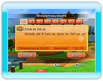

Bei der Auswahl „Einzelspieler“ im Hauptmenü kannst du zwischen zwei Modi wählen: „Missions-Modus“ oder „Match-Modus“. Wenn du zum ersten Mal im Missions-Modus spielst, kommst du zuerst in den Übungsraum, wo du die Steuerung übst.
● Missions-Modus
Spiele in diesem Modus mehrere vorgegebene Missionen. DieBedingungen und Regeln ändern sich mit jeder Mission.
DieBedingungen und Regeln ändern sich mit jeder Mission.
Wann immer du eine Mission erledigt hast, wird die Zeit registriert, und du wirst mit entsprechenden Medaillen ausgezeichnet.
● Match-Modus
Kämpfe in diesem Modus gegen CPU-Spieler. Du kannst hier mit denselben Regeln üben, die auch für das Nintendo Wi-Fi Connection Match gelten.